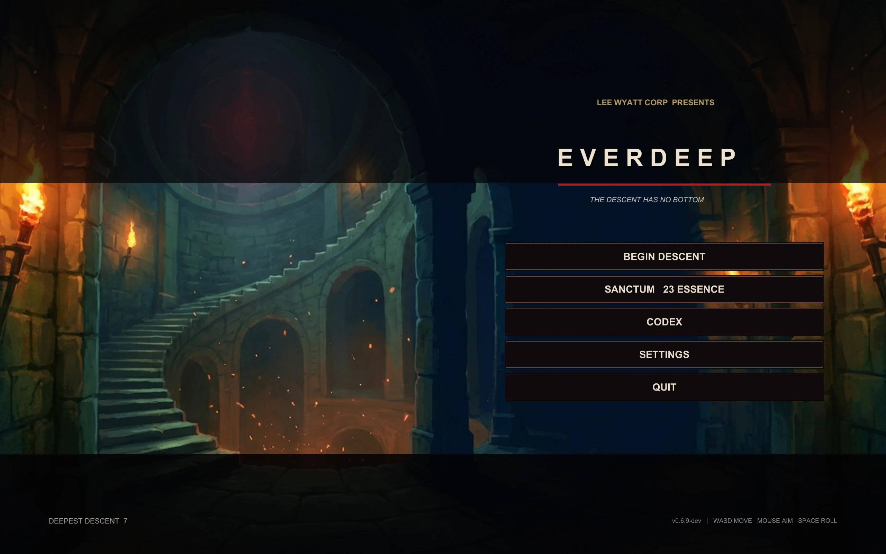
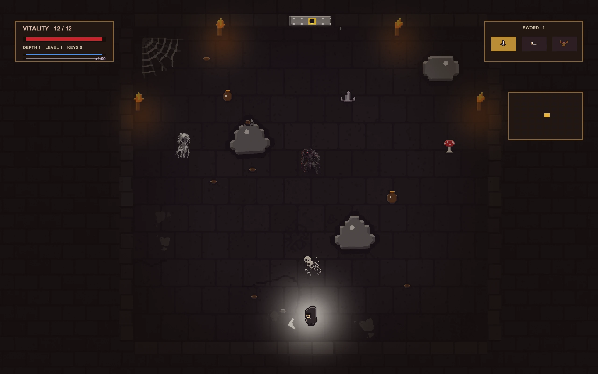

Rebuilding Everdeep's presentation
This Everdeep pass started with a simple rule: judge the game from the frame the player actually sees. That immediately exposed a problem on the title screen. The finished dungeon painting was there, but the interface was multiplying it almost to black. The menu also read in the wrong direction, with Descend buried at the bottom. The painting now keeps its full color, crops cleanly across screen shapes, and carries a rebuilt title composition with Descend at the top of the menu.
The same standard moved into the dungeon. The HUD and minimap were taking too much of the frame, and the lantern bloom was washing the hero into a white hotspot. Both are smaller now. Character art sits above the light again, so the room can stay dark without losing the player.
I also worked on the parts of the room that made the world feel assembled instead of built. Boulders now draw from three silhouettes and vary in proportion, rotation, tint, flip, and contact shadow. Ordinary sealed routes continue the room's textured masonry instead of appearing as flat red bars. Secret locks keep their iron-and-gold treatment, so a real discovery still reads differently from a closed wall.
This work sits on top of a broader presentation rebuild in 0.6.9. The title, menus, HUD, level-up screen, settings, Codex, Sanctum, recovered-lore reader, boss arrivals, boss victories, biome introductions, and room-clear feedback now share the same retained interface and cinematic language. Combat audio has also been remastered around distinct weapons, enemies, impacts, spaces, and progression layers.
The current Windows build completed with zero errors. I captured the title, menu, and gameplay directly from the built executable and used those frames to drive the final corrections rather than treating a successful compile as the finish line.

